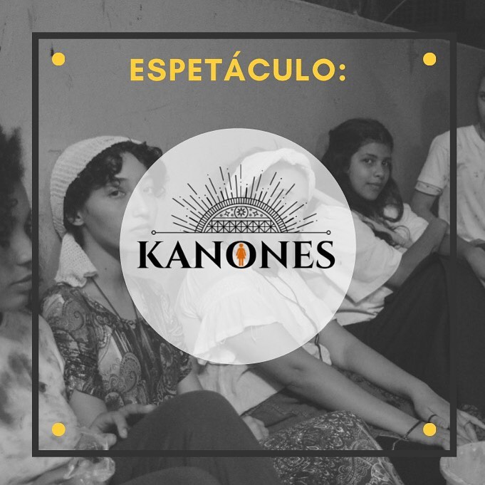
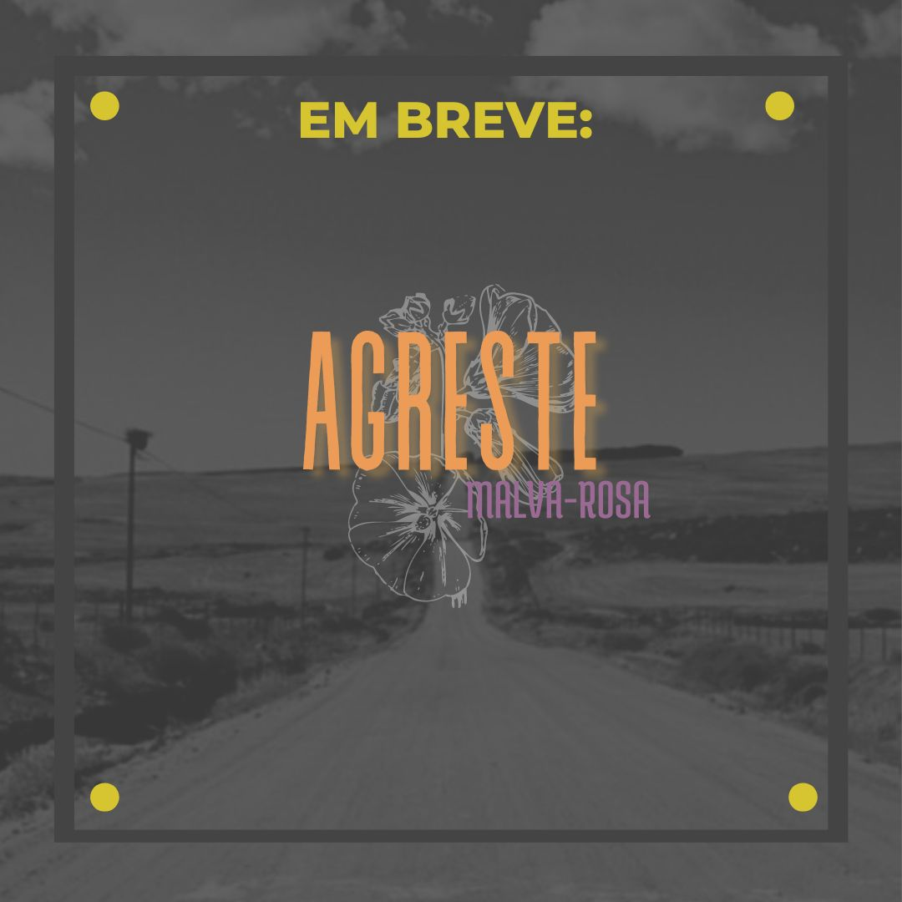

Kanones
É uma peça que fala sobre a mulher, as mulheres de Atenas e da atualidade. Foi criada para fazer uma crítica social de como as mulheres são tratadas, e vistas na sociedade desde as eras antigas. O espetáculo foi pensando a partir do assassinato da vereadora Marielle Franco e traz várias referências deste momento.

Cidade dos loucos
É uma peça que conta a história do Hospital Colônia de Barbacena, o que ficou conhecido como “o holocausto brasileiro”, porque lá foram mortas cerca de 60 mil pessoas. O enredo da montagem mostra como aconteciam as torturas e quais pessoas eram obrigadas a frequentar o local.

Agreste Malva Rosa
Nossa 4º turma do curso está produzindo a peça "Malva Rosa" de Newton Moreno, para ser o próximo espetáculo que irão apresentar. A peça foi escrita no ano de 2000 e trás questionamentos sociais que até hoje continuam se perdurando como à transfobia.